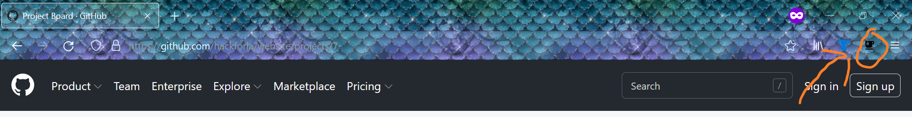
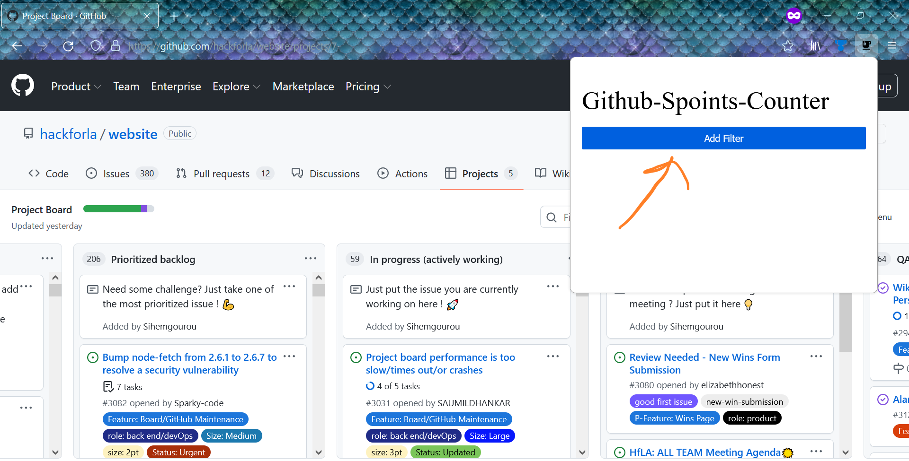
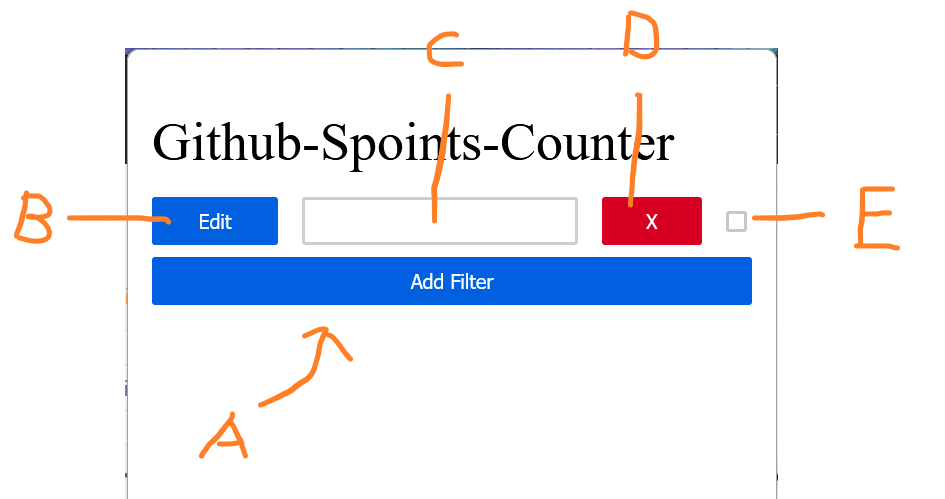
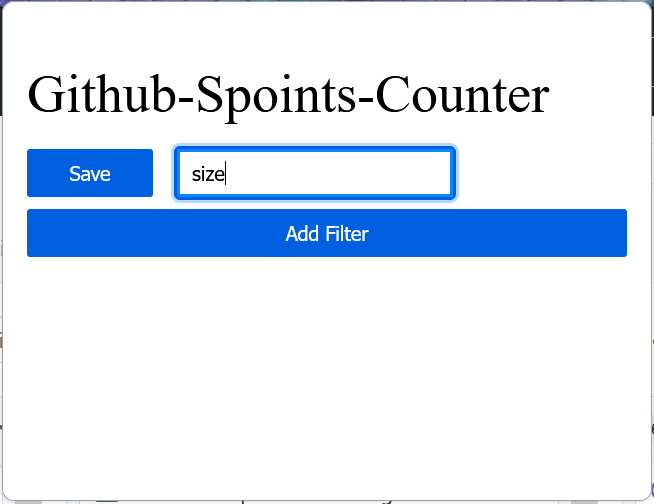
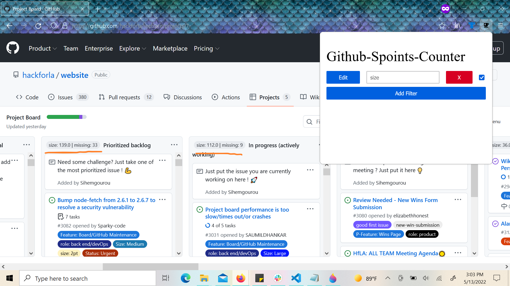
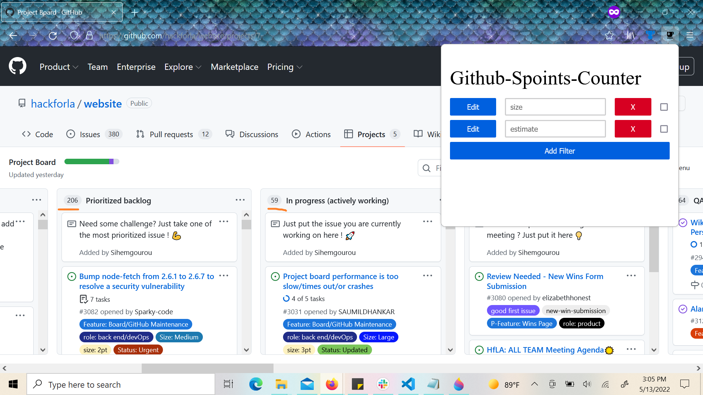

Step 1
Click on the extension icon.
Step 2
Click the "Add filter Button".
Step 3
- A: Add filter button
- B: Edit filter button
- C: Filter text input
- D: Delete filter button
- E: Filter toggle
Click on the edit filter button.
Step 4
Enter the text of the label to filter for and click the save filter button.
Step 5
Voila!
Step 6
You can also add more filters, but only one filter toggle can be checked at a time.
Step 7
To revert values, just uncheck the filter toggle.